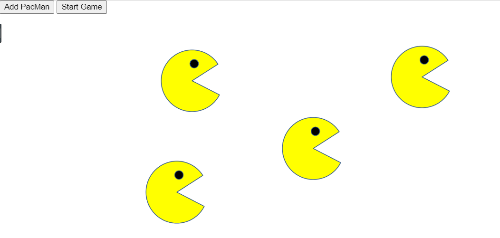
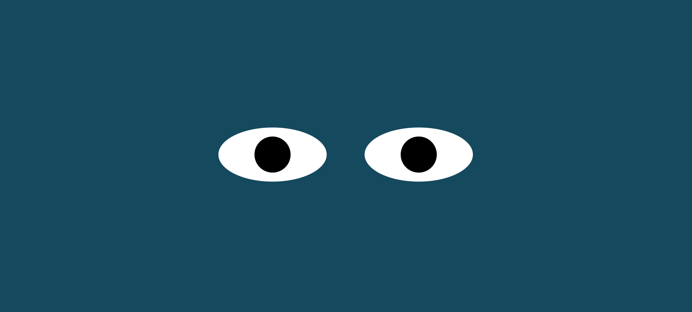
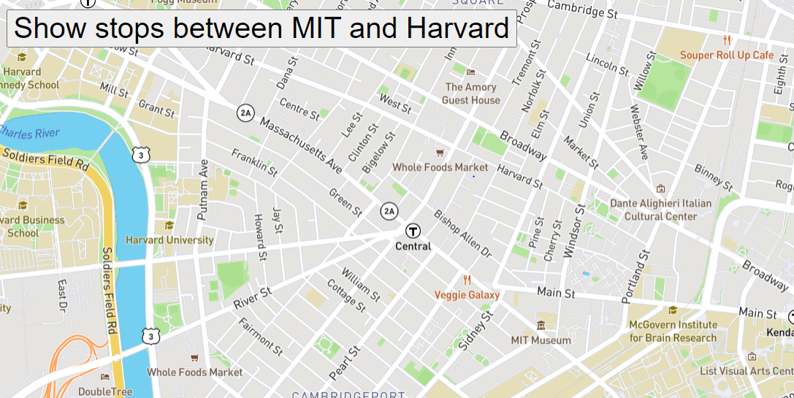

This project tested our skills with manipulating the DOM, as well as recognizing browser boarders. We utilized the tag, and the setTimeout function. Clicking the [Add PacMan] button in the top left-hand corner will add a new image of a pacman onto the browsers in a random position. Clicking the [Start Game] button will then cause each added pacman to move at a random speed and in a random direction. For more information, click here.
This project tasked us with creating two eyes on screen. These eyes will then track the movement of the mouse in the browser. Upon loading the browser, the pupils of the eyes will automatically track the mouse movement as long as it stays within the browser boarders. For more information, click here.
This project tested our abilities with adding animation to our code, along with icon overlay, and utilizing external sources such as MapBox. Clicking the [Show stops between MIT and harvard] button in the top left-hand corner will show the course of a city bus traveling from MIT to harvard. It will show each individual stop using a MapBox marker. For more information, click here.
